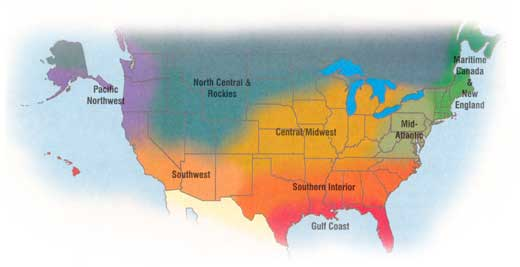
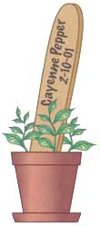
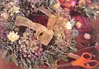

Timely Gardening Tips For Where You Live
By the Mother Earth News editors
December/January 2001
New England &Maritime Canada
Snow is flying and gardening chores are reduced to watering the window pots of parsley, sage and Thai hot peppers brought in from the garden. It's time to enjoy last season's harvest and start planning for the next. A personalized planting chart will help you know when to start seeds for your garden and how many plants you will need. Rule a large sheet of paper with columns for each vegetable you plant, and mark rows for each month. For each crop, mark the dates you start seed, transplant and harvest in the appropriate columns and rows. Note the size of your planting and if the amount harvested met your family's needs. With a few years of fine-tuning for extra-early crops, main crops and fall plantings, you will have a seasonal task calendar exactly suited to your individual site and tastes. (See the chart, " Your Personal Seed-Starting Planner " for more tips on garden planting times.)
Mid-Atlantic
December is the time to garden on paper. Pay attention to what problems you experienced last year and try to plan a rotation with these in mind. To discourage scab on your spring potatoes, plant them where your late corn grew. Early root crops are a good choice to follow winter squash since that area will tend to be low in annual weed seeds. Go through your stored winter vegetables every week or two, culling out the bad ones. Save seed for planting next year from your best open-pollinated winter squash as you eat them. In mid-January, start bulb onions from seed indoors or in a greenhouse. Take advantage of the first warm spells to sow some cold-tolerant lettuce and Chinese greens outdoors.
Southern Interior
Here in the South, where setting out plants at Easter is a rule of (green) thumb, midwinter is prime indoor sowing time for those seeds that take a bit longer to get started. Begonias take 14 to 16 weeks to mature, so seeds started on New Year's Eve will be blooming in your hanging baskets and window boxes by midspring. `Dragon Wing' begonia is a spectacular new pink hybrid to try, with enormous plants that drink up our southern heat and humidity. Start geraniums, lisianthus, aquilegias, pansies and vincas before the end of January. Pick a sunny, dry day to prepare vegetable beds for spring crops. Except for the Piedmont and other cooler areas, January is time to begin planting cabbage, carrots, lettuce and hardy greens, radish and turnips. So when those tempting catalogs appear in the mailbox, do more than just dream about spring planting-start sowing!
Gulf Coast
Keep an eye out for freezing temperatures. Cut back tropical plants and winterize your tender plantings with layers of mulch. (Keep a cover handy for when freezes are predicted.) Don't fertilize warm-season turf-grasses now: They have entered dormancy and any forced growth is vulnerable to freezing. Prune ornamental evergreens and plant pansies and other cool-season bedding plants. Tulips and hyacinths that have been chilled for six weeks should be ready to plant by late December. Prepare vegetable beds for spring planting before late winter rains make soil too wet to work. December is time to plant onion transplants, hardy greens and root crops, and start seed for cabbage-family transplants. Later in January, start planting potatoes and lettuce, and sow seed for tomato, pepper and eggplant spring-garden transplants.
Central/Midwest
The seed catalogues have arrived and the snow is piled high. It's time to dream about spring. Think about diversifying your garden this year by ordering some of the hundreds of wonderful heirloom vegetable varieties. Note the date when stored and canned vegetable crops are completely consumed and plan accordingly. In late January get your seed-starting equipment ready and start hardy greens and cold tolerant flowers like pansies and primulas. Improve your seed germination with a heat source such as an electric heating mat. Nearly every type of garden plant germinates faster and better with a week or two of 80 to 90 degree soil temperatures. Indoor house plants and window gardens typically need less water and fertilizer this time of year since growth slows down with shorter winter days. Outside, shovel snow onto perennials to help protect them from harsh winter conditions.
North Central and Rockies
If snuggling in with seed catalogs fails to satisfy on dark winter days, try growing fresh herbs or greens indoors. Success will depend on providing enough light - a south-facing window is usually not enough. Instead, use florescent lights and keep the tubes as close to the plants as possible. An inexpensive timer is handy to turn on the lights for 12 to 16 hours a day. Start a few extra-early tomatoes and peppers in January, picking varieties that can be container-grown so they can be brought inside or protected during chilly spring nights. ( Click here for more seed-starting tips .)
Pacific Northwest
Start seeds now for hardy vegetable transplants for a late winter garden. Outside, protect winter crops of lettuce, greens and hardy coles with floating row covers or a cloche system. Keep harvesting and thinning the root vegetables and notice how sweet and flavorful they are this time of year, with sugars and nutrients concentrated in the roots. Be alert to a break in January weather and plant your early peas, selecting enation virus-resistant varieties. Celebrate the start of a new year with a generous clipping of flowering quince or other early spring flowering shrubs for forcing. If it's been cold and dry let the branches soak in slightly warm water for an hour. Soon bouquets of colorful swelling buds announce spring is just around the corner.
Southwest
Snow and hard frost challenge gardeners located above 4,000 feet, but most Southwest areas below 3,000 feet are great winter garden territory. Vegetables to plant now include broccoli, root crops, greens, onions and onion sets, rhubarb roots, lettuce, peas, fava beans, potatoes, garlic and shallots. Winter is the prime time to transplant bare-root fruit trees and establish hardy perennial plantings. Native perennial bunchgrasses are beautiful and drought resistant for drier parts of California and the Southwest.
Gift ideas from
your garden:
• Bundles of fragrant dried tea or culinary herbs
• Hot pepper pickles, sauces or jellies
• Sun-dried tomatoes or fruit
• Homemade preserves or jams
• Dried flower bouquets
• Collections of home-saved seeds
• Garlic braids
• Dried fruit mixes
• Homemade anything: Your friends will love it!

Incorporating these grasses, native wildflowers and other drought-adapted perennial plants into your landscape will preserve scarce water resources and make yard work much easier. In the low desert, gardeners can start thinking about starting eggplants, peppers and tomatoes indoors. Hot pepper fans may want to try the orange manzano or rocoto pepper from South America - a new variety especially adapted to the region. It's an ornamental plant with dark green, fuzzy leaves, blue flowers and orange, thick-fleshed, juicy-hot, apple-shaped fruit.
Our thanks to the following for their contributions to the Almanac: Roberta Bailey, FEDCO Seeds, Waterville, Maine; Cricket Rakita, Southern Exposure Seed Exchange, Mineral, Virginia; Connie Dam-Byl, William Dam Seeds, Dundas, Ontario; Matt Barthel, Seed Savers Exchange, Decorah, Iowa; Bill McDorman, Seeds Trust/High Altitude Gardens, Halley, Idaho; Josh Kirschenbaum and Tom Johns, Territorial Seed Company, Cottage Grove, Oregon; Rose Marie Nichols McGee, Nichols Garden Nursery, Albany, Oregon; Craig and Sue Dremann, Redwood City Seed Co., Redwood City, California; Tracy K. Lee, Park Seed Company, Greenwood, South Carolina.
|
 |
 |
 |